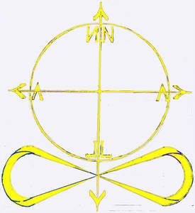

Trade Mark Journal No.2025/018 2 May 2025
UK00004183375 2 April 2025 (3,4,14,18,25,42)

Circle with perpendicular arrows running through it, sign of infinity underneath the circle with a bottom arrow crossing the middle of the sign. NALLAN is written inside the circle in the mirror reflection image starting from the top right.
No claim is made to the exclusive right to use the sign of infinity, circle or perpendicular arrows apart from the mark as shown.
- Class 3
- Perfume; Perfumes; Perfume oils; Perfumery and fragrances; Amber [perfume]; Fragrances; Oils for perfumes and scents; Musk [perfumery]; Cologne; Perfume water; Aromatics for perfumes; Room perfume sprays; Liquid perfumes; Potpourris [fragrances]; Colognes; Scents; Fragrance emitting wicks for room fragrance; Aromatics for fragrances; Perfumery; Cedarwood perfumery; Extracts of perfumes; Eau de cologne [cologne water]; Perfumes for ceramics; Body deodorants [perfumery]; Extracts of flowers [perfumes]; Flowers (Extracts of -) [perfumes]; Extracts of flowers being perfumes; Deodorants for personal use [perfumery]; Ionone [perfumery]; Body fragrances; Perfumeries; Fragrance preparations; Perfume oils for the manufacture of cosmetic preparations; Perfumed potpourris; Vanilla perfumery; Household fragrances; Room perfumes in spray form; Natural oils for perfumes; Room fragrances; Perfumery products; Cologne water; Scented water for fragrancing; Scented oils; Synthetic perfumery; Air fragrance reed diffusers; Incense spray; Scented body spray; Eau de Cologne; Eau de cologne; Essences for fragrancing; Eau de colognes; Scented room sprays; Fumigation preparations [perfumes]; After-sun oils [cosmetics]; Ethereal oils for fragrancing; Fragrance for household purposes; Eaux de Cologne; Eaux de cologne; Geraniol fragrancing compounds; Natural perfumery; Perfumed water; Eau de parfum.
- Class 4
- Aromatherapy fragrance candles; Musk scented candles; Perfumed candles; Candles (Perfumed -); Scented candles; Fragranced candles; Oils for fragrancing.
- Class 14
- Jewelry; Jewellery; Trinkets [jewellery, jewelry (Am.)]; Necklaces [jewelry]; Brooches [jewelry]; Jewelry brooches; Brooches being jewelry; Necklaces [jewellery, jewelry (Am.)]; Necklaces [jewellery]; Ornaments [jewellery, jewelry (Am.)]; Bracelets [jewellery, jewelry (Am.)]; Brooches [jewellery, jewelry (Am.)]; Pearls [jewellery, jewelry (Am.)]; Trinkets [jewelry]; Jewelry (Paste -) [costume jewelry]; Paste jewelry [costume jewelry]; Trinkets [jewellery]; Bracelets [jewelry]; Amulets [jewellery, jewelry (Am.)]; Bracelets [jewellery]; Charms [jewellery, jewelry (Am.)]; Chains [jewellery, jewelry (Am.)]; Jewelry stickpins; Pearls [jewelry]; Medallions [jewellery, jewelry (Am.)]; Ornaments [jewellery]; Rings [jewellery, jewelry (Am.)]; Pins [jewellery, jewelry (Am.)]; Pendants [jewelry]; Brooches [jewellery]; Jewellery brooches; Lockets [jewellery, jewelry (Am.)]; Jewellery, including imitation jewellery and plastic jewellery; Paste jewellery [costume jewelry (Am.)]; Paste jewellery [costume jewelry [Am.]]; Pendants [jewellery]; Amulets [jewelry]; Jewelry hatpins; Gold thread [jewellery, jewelry (Am.)]; Silver thread [jewellery, jewelry (Am.)]; Costume jewelry; Pearls [jewellery]; Charms [jewelry]; Jewelry charms; Charms for jewelry; Diamond jewelry; Costume jewellery; Lockets [jewelry]; Gold jewellery; Amulets being jewellery; Amulets [jewellery]; Wristlets [jewellery]; Wire of precious metal [jewellery, jewelry (Am.)]; Charms [jewellery]; Charms for jewellery; Jewellery charms; Rings [jewelry]; Jade [jewellery]; Jewellery chain of precious metal for necklaces; Threads of precious metal [jewellery, jewelry (Am.)]; Decorative brooches [jewellery]; Items of jewellery; Jewellery items; Crucifixes as jewelry; Plastic costume jewellery; Shoe jewelry; Fashion jewellery; Rings being jewellery; Rings [jewellery]; Jewellry; Lockets [jewellery]; Jewelry chains; Chains [jewelry]; Jewellery chain of precious metal for bracelets; Agate as jewellery; Jewelry caskets; Shoe jewellery; Pins [jewelry]; Amber pendants being jewellery; Jewellery caskets; Hat jewelry; Gold plated brooches [jewellery]; Pewter jewellery; Jewellery chain of precious metal for anklets; Imitation jewellery ornaments; Crucifixes as jewellery; Amberoid pendants being jewellery; Jewellery stones; Precious jewellery; Jewelry boxes; Hat jewellery; Imitation jewelry; Fake jewellery; Jewellery chains; Chains [jewellery]; Jewellery in semi-precious metals; Plastic bracelets in the nature of jewelry; Identification bracelets of precious metal [jewelry]; Pins [jewellery]; Pins being jewellery; Jewellery for personal adornment; Identification bracelets [jewelry]; Jewellery chain; Jewellery boxes; Bracelets made of embroidered textile [jewelry]; Jewellery rope chain for necklaces; Jewellery made from gold; Jewellery made from silver; Jewellery in non-precious metals; Dress ornaments in the nature of jewellery; Silver thread [jewelry]; Gold thread jewelry; Gold thread [jewelry].
- Class 18
- Fashion handbags.
- Class 25
- Fashion hats; Menswear; Ready-to-wear clothing; Knitwear [clothing]; Face masks [fashion wear] ; Casual clothing; Foulards [clothing articles]; Clothing; Casual footwear; Parts of clothing, footwear and headgear; Footwear; Leather clothing; Clothing of leather; Leather (Clothing of -); Leisure clothing; Denims [clothing]; Articles of sports clothing; Clothing for leisure wear; Knitwear; Smart clothing; Articles of clothing; Headbands [clothing]; Headbands for clothing; Footwear for women; Cashmere clothing; Clothing of imitations of leather; Leather (Clothing of imitations of -); Furs [clothing]; Articles of clothing made of leather.
- Class 42
- Fashion design; Design of fashion accessories; Fashion design consulting services; Design of clothing; Design of clothing, footwear and headgear; Design of clothing accessories; Designing of clothing; Jewelry design; Design of jewellery; Dress design.
Natalie Lapteva